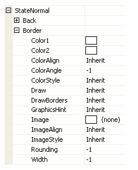
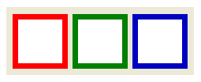
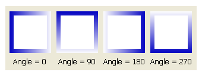
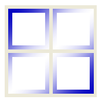
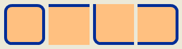
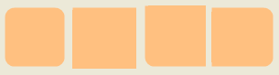
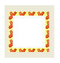
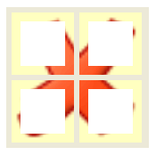
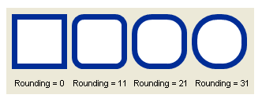

Border
The majority of Krypton controls allow a border to be drawn and so provide a set of properties that allow customization of the border appearance. Each control will provide the same set of properties for this task and so once you are familiar with how they operate you can use this knowledge when dealing with any of the controls. Figure 1 shows the standard set of properties from the KryptonGroup control.

Figure 1 –Border display properties
Color Properties
The ColorStyle property determines how to make use of the Color1, Color2, ColorAlign and ColorAngle set properties. When ColorStyle is defined as Solid the border will be drawn using the Color1 value and the other color properties are ignored as not relevant. Figure 2 shows some KryptonGroup instances with Solid defined and with a border Width of 7 pixels.

Figure 2 – ColorStyle = Solid, Width = 7
All other ColorStyle values such as Linear and Rounded allow a gradient effect between two colors, where Color1 is the starting color and Color2 is the ending color. Now the ColorAngle property becomes important as it determines the direction in which the transition occurs. Figure 3 shows the same Linear style and same starting and ending colors but with different angles.

Figure 3 – ColorStyle = Linear
ColorAlign is used to decide how to calculate the starting and ending points for the gradient effect. By default it will always start at the top left of the control and ends at the bottom right of the control which gives appearance as seen already in figure 3. If instead you choose the Form level alignment then it will use the top left of the enclosing form and bottom right of the enclosing form as the total area of the gradient. Figure 4 shows four controls all with exactly the same ColorAngle of 45 degrees, ColorAlign of Form and ColorStyle of Sigma.

Figure 4 – ColorStyle =Sigma, ColorAlign = Form, ColorAngle = 45
Draw & DrawBorders Properties
Use the DrawBorders to specify the combination of four borders that should be allocated space. In the properties window you can use the drop down control that appears when pressing the property edit button to alter the setup. You can specify no border edges, just one border edge, two border edges, three border edges or all four. See figure 5 for just four examples of different border drawing settings.

Figure 5 – DrawBorders with a variety of options
As you expect, the Draw property is used to indicate if the border edges specified in DrawBorders should be drawn. It is important to note that if you use False, and so prevent drawing of the border edges, it will still allocate space for the borders and clip the background that is drawn underneath the border. You can see this in figure 6 where the same controls as figure 5 are used but with the Draw property set to False. If you no border space to be allocated on any edge and no borders to be drawn then you should set the DrawBorders property to none.

Figure 6 – Draw = False
Image Properties
The image is always drawn after the color has been drawn. This ensures that any alpha channel in the image will show through with the correct back color. Providing an Image is optional and the related ImageAlign and ImageEffect are only used when an Image has been specified. Figure 7 shows a KryptonGroup with an Image of a red cross with an alpha channel so that the Color1 value of Yellow shows through the transparent areas.

Figure 7 – Color1 = Yellow, Image contains alpha channel
The ImageAlign property allows the image to be draw aligned against the Form and not just the control instance. Figure 8 shows the use of four KryptonPanel controls that are all assigned the same Image, ImageAlign and ImageEffect.

Figure 8 – ImageAlign = Form, ImageEffect = Stretch
The ImageEffect property describes how to draw the Image over the required area. Figure 6 shows the example where Stretch is used to ensure the Image exactly covers the entire area. Tiling options include Tile, TileFlipX, TileFlipY and TileFlipXY that repeat over and over again until the entire area is filled. Positioning options such as TopLeft and BottomMiddle allow the image to be placed relative to both the vertical and horizontal edges.
Width and Rounding
Width is used to determine the pixel width of the border. A value of -1 is used to indicate that the value should be inherited from the next highest level of settings. Rounding is used to decide how rounded the four corners of the border will be. Again a value of -1 will cause inheritance from the next highest level of settings. Figure 9 shows some examples of different Rounding values.

Figure 9 – Rounding property